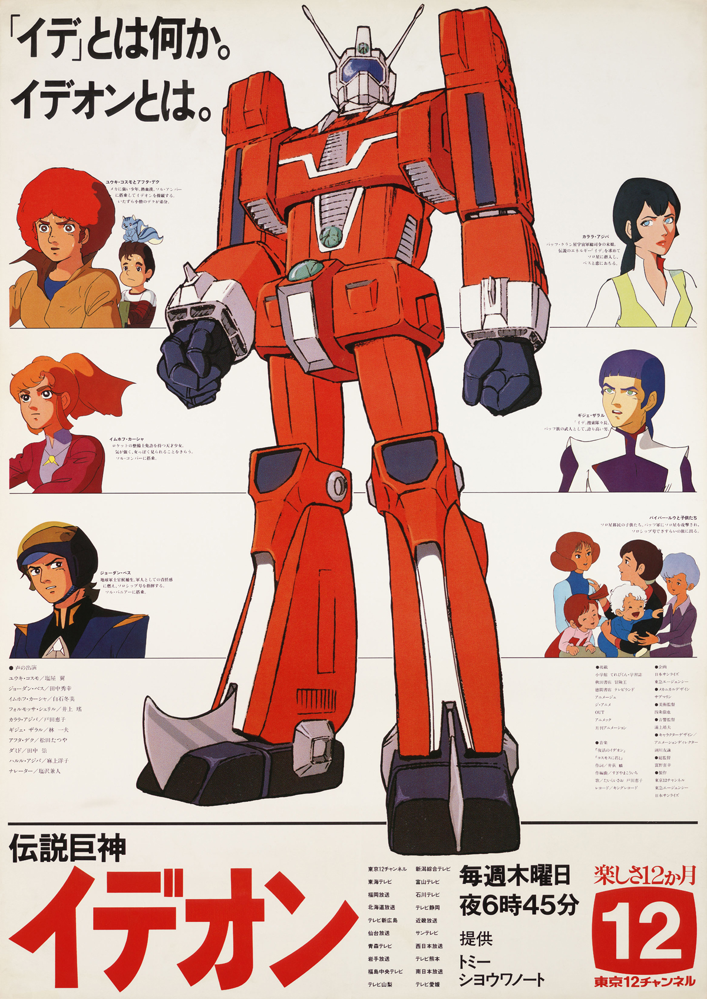
PRODUCTION INFORMATION
After the cancellation of MOBILE SUIT GUNDAM (1979), Yoshiyuki Tomino moved on to create SPACE RUNAWAY IDEON. Concepts for this series began in 1979 when SUNRISE collaborated with the Toy Comapny TOMY, which wanted toy designs to be the forefront for the TV Series. Originally, it was planned to be a 43 episode long series, but like MOBILE SUIT GUNDAM, it was cancelled before it could reach the end of it's run due to not only commerical struggles, but low TV ratings.
Following the cancellation of this TV series, Tomino was allowed the chance to revive MOBILE SUIT GUNDAM by cleaning up animation and allowing the series to have a second life in the cinema. It was a commercial success, and following that success, Tomino was allowed the chance to revive IDEON as well... with some compromises.
For more information on the revival of IDEON, check out the BE INVOKED page.
Learn more about THE IDEON: BE INVOKED!
Air Date: May 8, 1980 to January 30, 1981
Episode Duration: 39 episodes
Director: Yoshiyuki Tomino
Studio: Sunrise
STORY
Humanity's pursuit of knowledge leads them to the planet Solo, where they find mysterious remains of a long dead alien civilization, including the 3 part super robot Ideon, and a powerful warship. Using these, the Earthlings sent to investigate the ruins defend themselves in their constant conflicts against powerful aliens called the Buff Clan, who are in pursuit of Ide, the mysterious energy that powers the Ideon.
CAST AND CREDITS
Chief Director: Yoshiyuki Tomino
Mechanical Design: Yuichi Higuchi
Character Design: Tomonori Kogawa
Soundtrack: Koichi Sugiyama
Storyboard: Yoshiyuki Tomino
Series Composition: Toshifumi Takizawa
Art Direction: Tetsuya Yojou
Chief Animation Direction: Tomonori Kogawa
IMAGE GALLERY
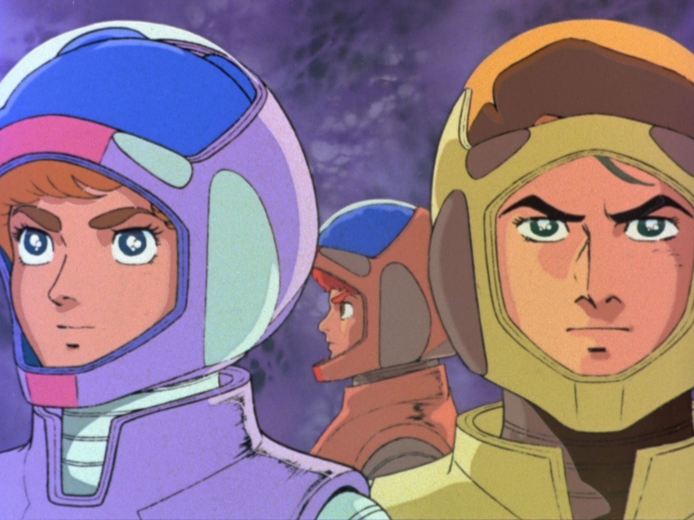
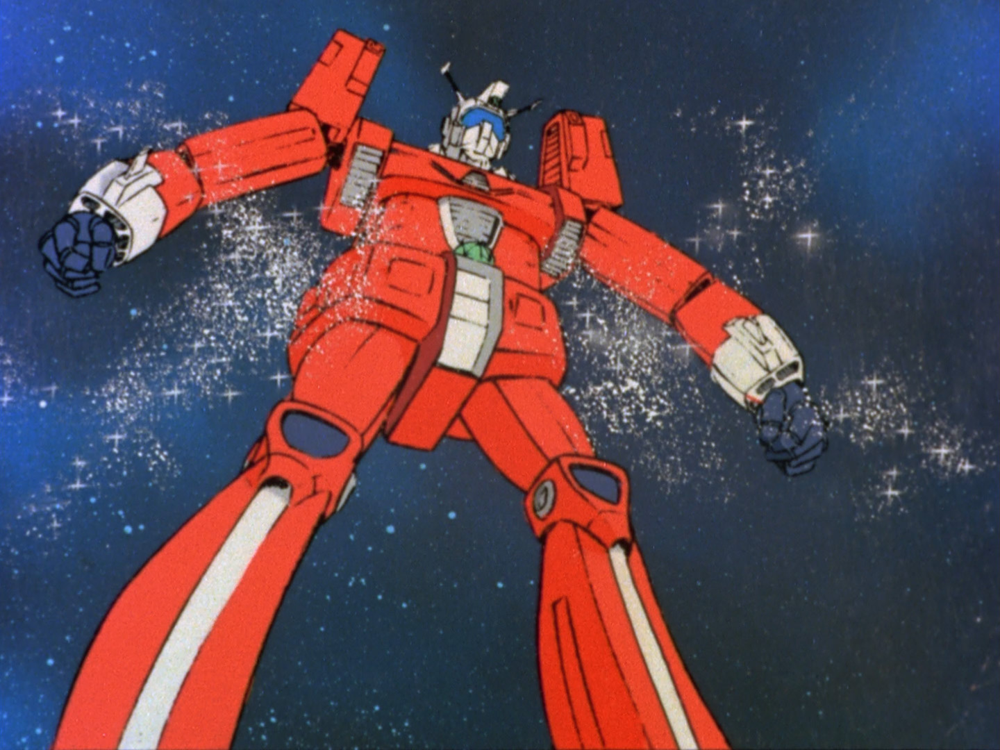
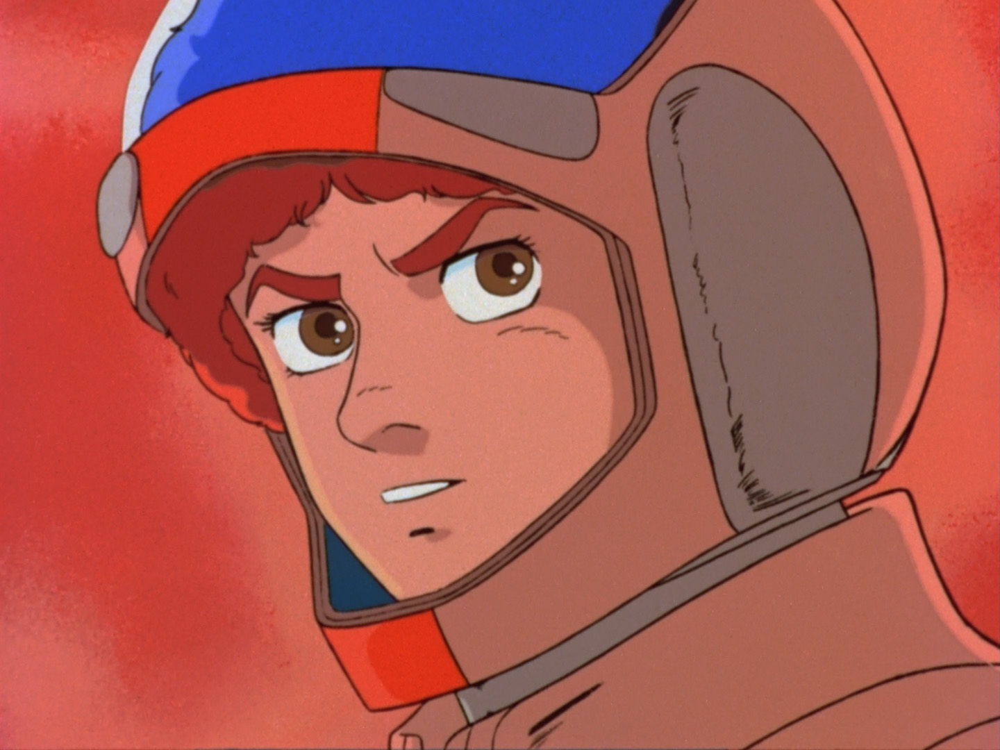
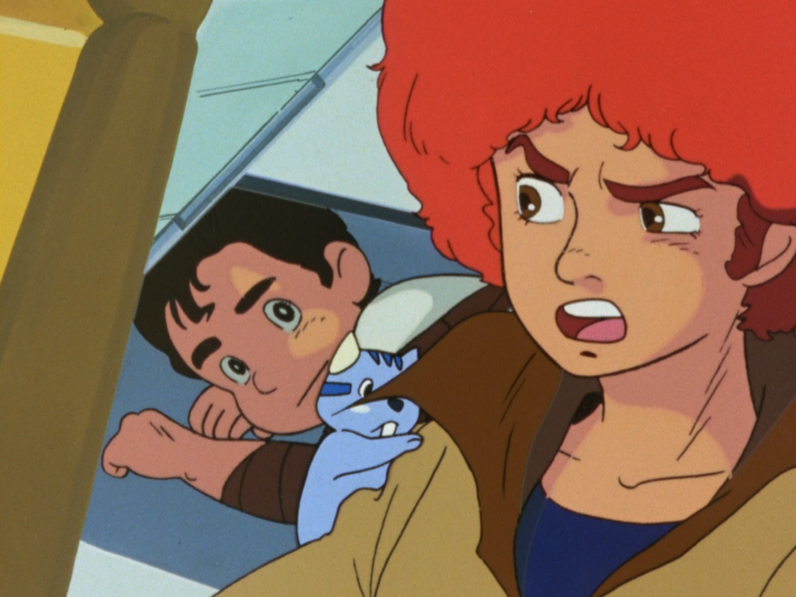
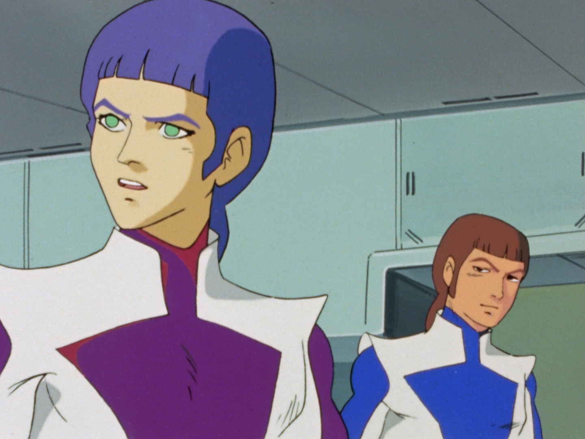
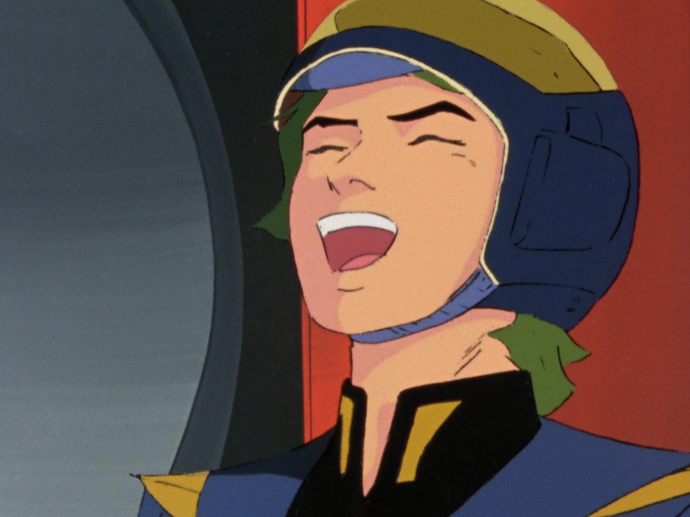
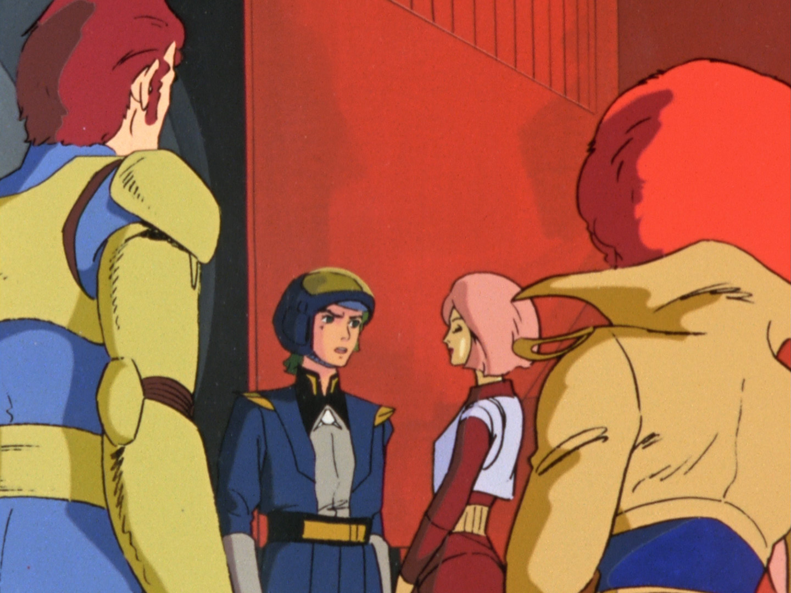
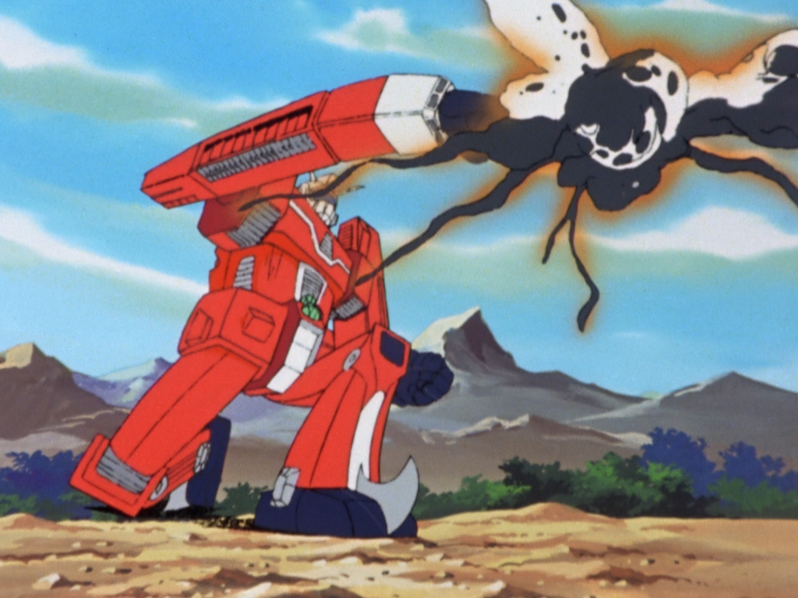
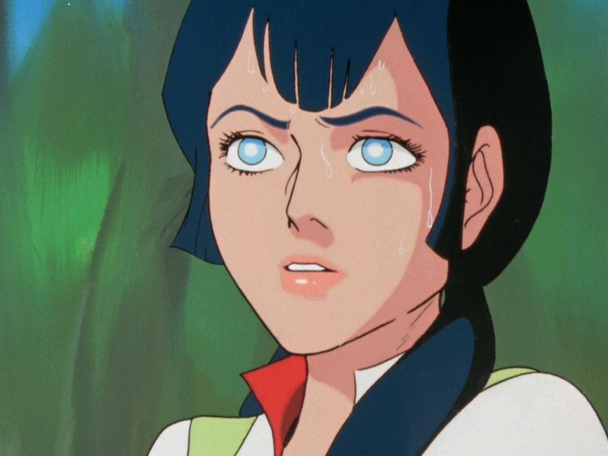
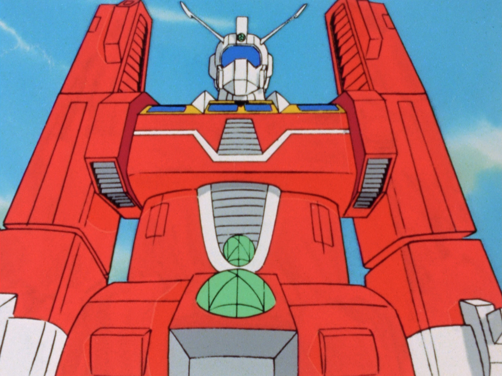